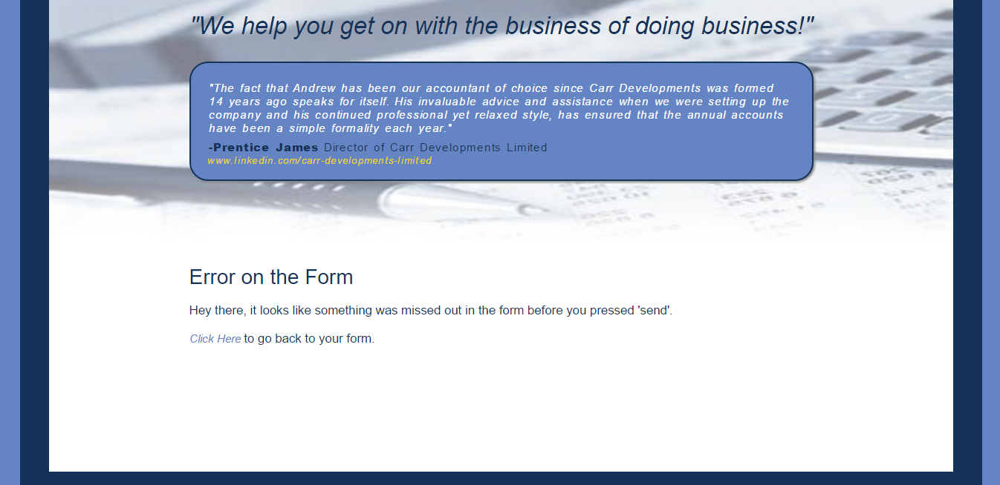
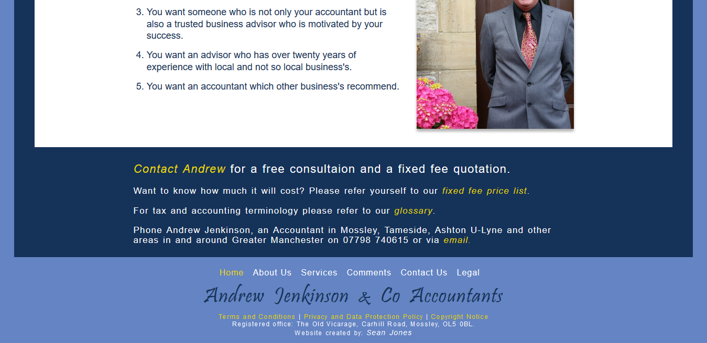
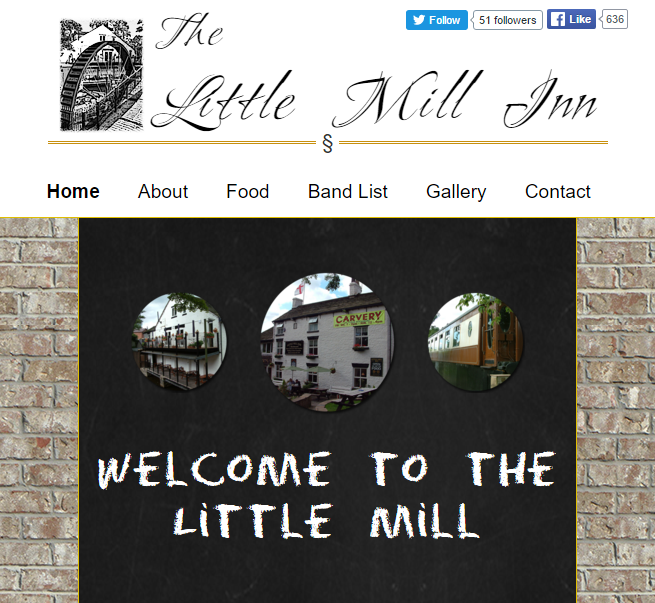
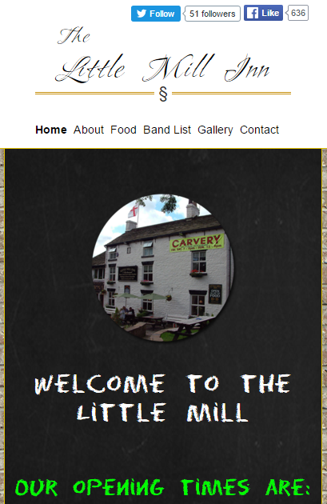
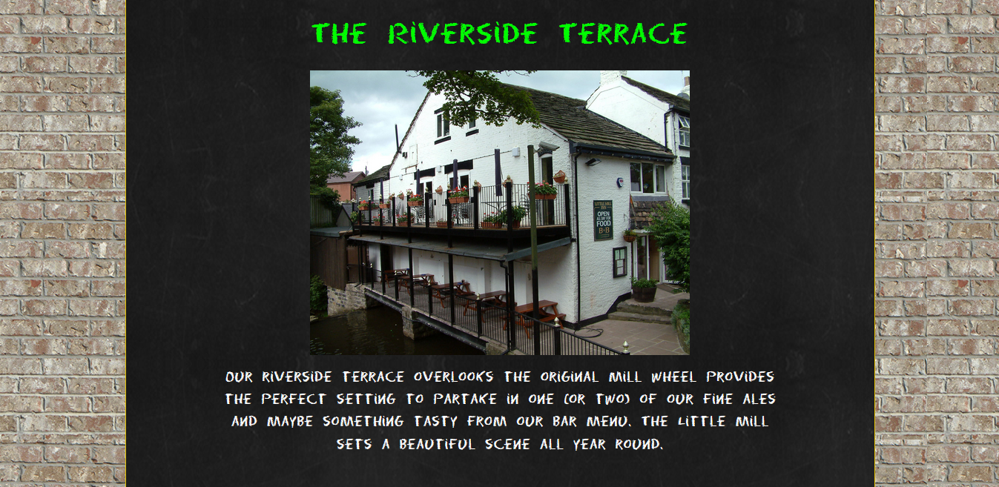
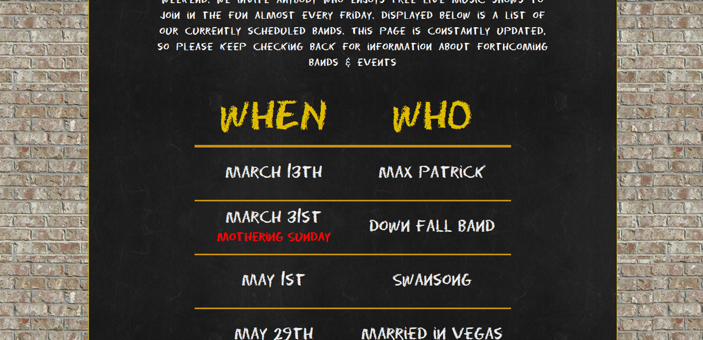
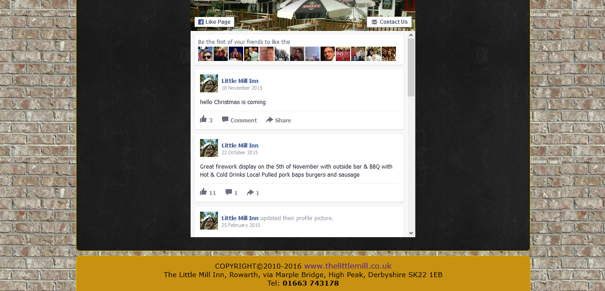
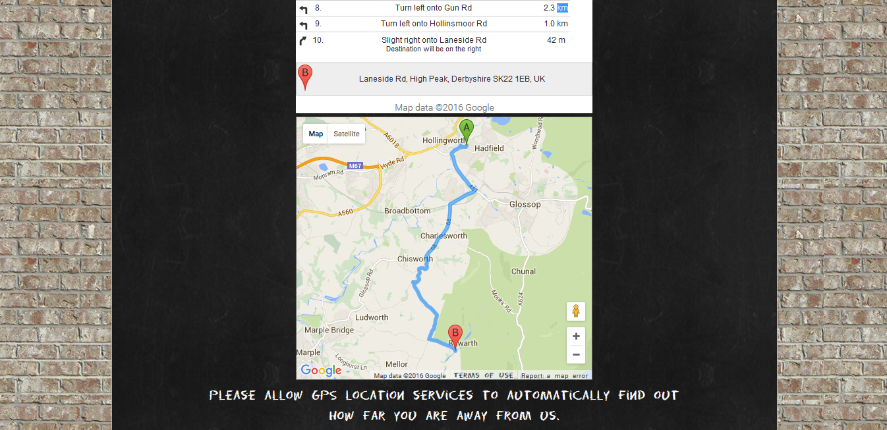

My hands are up! I confess! I´m a geek, and you know what, I´m proud of it!
I have been into Tech and games since I could use my hands. Pokémon Red on the Gameboy, GoldenEye on the N-64, I built my first computer when I was 16. I subscribe to some comic´s, The Flash being an all time favourite, imagine how much you could do with that speed!
I have a super logical mind, I´m very intuitive and a little bit of a perfectionist. All of this makes me an excellent problem solver and the most likely reason why I enjoy programming and RPG´s so much, they are both a big puzzle. I was even ranked whilst playing
WarCraft III online.
I´ve been programming since college, I dipped my toes into VB programming and went onto University at Preston and studied Computer Game Development. This showed me an array of different aspects of what programming can actually do. After
University I found myself getting stranded at a dead-end job. Then as if a lantern in a dark wood, I was asked by someone if I knew anything about computers and if I could maintain his website. I accepted it as a challenge more than anything and found myself enjoying playing around behind the scenes of a website.
I then started some self learning whilst working full-time and now
supporting a new family, I became a very busy man but determined. I did an online course and also a part time evening course at a local college in Web Development. I enjoy the fact that the Internet, like computers, is ever evolving. There will always be new things to learn, keeping me on my toes to stay up to date.
The last few years have seen my life flipped upside down, it´s not about me anymore, I have a daughter now! In 2013 we had Freja. She is totally nuts, but it´s awesome to watch her develop into her own little self, may be one day she will be a geek like me. :)
I designed and developed a website for Andrew Jenkinson, an accountant in Manchester. We met and spoke about his needs and requirements for his website and that started the design process. After we finalized a design I built the site from scratch working to agreed deadlines right up-to the launch day. I was also responsible for arranging his server requirements and uploading the site.
For: Andrew Jenkinson at A.S.Jenkinson & Co Accountants
The contact form uses a simple PHP script to hide the personal email address from any visible code for security reasons.

PHP scripts have also been used to perform some validation on the contact form.

×
The Little Mill Inn Website
Little Mill Website
I volunteered to modernize the Little Mills original website. I created a new design, and developed it into something not only more current and versatile but also suiting it to the business’s style a lot more. I am responsible for keeping an updated version of the site running on the server and handle any issues that may occur. I also setup their Facebook and Twitter profiles linking them all together for ease of updating. He has recently moved to a new business location giving me the opportunity to re-make this site using new techniques I have learnt since.
The site it made using pure HTML5 and CSS3 and uses a responsive design that adapts to the users viewport.

The pages adjusts itself to a medium screen.

The pages adjusts itself once more to a mobile friendly layout.

Only CSS3 is used to provide the simple navigation animation.

A custom font is used for the chalk text on the site.

The Facebook API provides instant updates from the Little Mills Facebook Page. This is a really easy way for the client to keep regular posts and it contributes towards better S.E.O.

The postcode for the Little Mill usually takes you to local farm so instead I used precise
longitude and latitude co-ordinates with the Google map API to provide directions from the users current GPS location to the clients pub.